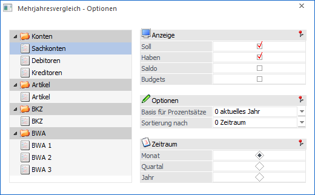
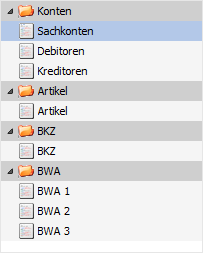
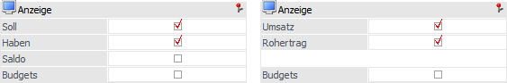
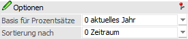
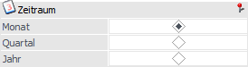

Über den Menüpunkt
1 WinLine START
1 Optionen
1 Mehrjahresvergleich
können Voreinstellungen vorgenommen werden, welche bei Auswertungen mit Vorjahresvergleichen verwendet werden.
WinLine INFO
ü Konteninfo
ü Artikelinfo
ü BKZ-Info
ü BWA-Info
ü Im Menüpunkt "Mehrjahresvergleich" werden die Einstellungen im Fenster mit denen aus den Optionen vorbelegt, können dort aber für die Auswertung geändert werden.
WinLine FIBU
ü Kontenstamm - Button "Info"
ü Personenkontenstamm - Button "Konteninfo"
ü BKZ-Stamm - Button "Info"
ü BWA-Stamm - Button "Info"
WinLine FAKT
ü Kontenstamm - Button "Info"
ü Personenkontenstamm - Button "Konteninfo"
ü Artikelstamm - Button "Artikelinfo"

Objekttypen

Auf der linken Seite des Fensters werden alle Objekttypen angezeigt, für welche Einstellungen hinterlegt werden können. Durch Anwahl eines Objektes werden im rechten Bereich des Fensters die bereits getätigten Hinterlegungen angezeigt und können editiert werden.
Anzeige

Im Bereich "Anzeige" werden abhängig vom Objekt die folgenden Auswahlen angeboten.
Hinweis
Standardmäßig werden bei Sachkonten Soll und Haben angezeigt, bei Debitoren hingegen nur die Soll-Summen und bei Kreditoren nur die Haben-Summen.
Ø Soll (nur "Konten", "BKZ" und "BWA")
Durch Aktivieren der Checkbox wird gesteuert, dass die Summe "Soll" angezeigt wird.
Ø Haben (nur "Konten", "BKZ" und "BWA")
Durch Aktivieren der Checkbox wird gesteuert, dass die Summe "Haben" angezeigt wird.
Ø Saldo (nur "Konten", "BKZ" und "BWA")
Durch Aktivieren der Checkbox wird gesteuert, dass der Saldo angezeigt wird.
Ø Umsatz (nur "Artikel")
Durch Aktivieren der Checkbox wird gesteuert, dass der Umsatz des Artikels angezeigt wird.
Ø Rohertrag (nur "Artikel")
Durch Aktivieren der Checkbox wird gesteuert, dass der Rohertrag des Artikels angezeigt wird.
Ø Budget
Wird diese Checkbox aktiviert, dann werden auch die entsprechenden Budgetwerte angezeigt.
Optionen

Ø Basis für Prozentsätze
Hier kann eingestellt werden, auf welcher Basis die Prozentsätze für die Abweichungen berechnet werden sollen, wobei hier folgende Möglichkeiten zur Verfügung stehen.
ü 0 - aktuelles Jahr
Wird als
Basis für Prozentsätze "0 - aktuelles Jahr" gewählt, so beziehen sich die
angeführten Prozentsätze immer auf das aktuelle Wirtschaftsjahr.
Beispiel
Jahr: 2024 / Saldo:
100,00
Jahr: 2023 / Saldo: 150,00
Jahr: 2022 / Saldo: 130,00
Im
Jahr 2023 werden in der Spalte Prozent "-33 %" angezeigt: der Umsatz ist im Jahr
2024 um 33% niedriger als im Jahr 2023.
Im Jahr 2022 werden in der Spalte
Prozent "-23 %" angezeigt: der Umsatz ist im Jahr 2024 um 23% niedriger als im
Jahr 2022.
ü 1 - Folgejahr
Wird als Basis
für Prozentsätze "1 - Folgejahr" gewählt, so beziehen sich die angeführten
Prozentsätze immer auf das Folgejahr.
Beispiel
Jahr: 2024 / Saldo:
100,00
Jahr: 2023 / Saldo: 150,00
Jahr: 2022 / Saldo: 130,00
Im
Jahr 2023 werden in der Spalte Prozent "-33 %" angezeigt. D.h. der Umsatz ist im
Jahr 2024 um 33% niedriger als im Jahr 2023.
Im Jahr 2022 werden in der
Spalte Prozent "15 %" angezeigt: der Umsatz ist im Jahr 2023 um 15% höher als im
Jahr 2022.
Ø Sortierung nach
Hier kann eingestellt werden, in welcher Reihenfolge die Daten ausgegeben werden sollen.
ü 0 - Zeitraum
Es wird nach dem
Zeitraum sortiert, d.h. innerhalb des Zeitraums (z.B. Monat) werden die
selektierten Werte angedruckt.
Beispiel
Es werden die Werte "Soll" und
"Haben" sortiert nach "Zeitraum" ausgegeben, der Zeitraum selbst ist der
Monat.
Es wird zuerst der Januar angedruckt, wo dann die Werte "Soll" und
"Haben" aufscheinen, dann wird der Februar mit "Soll" und "Haben" gedruckt
usw.
ü 1 - Wert
Es wird nach den
Werten sortiert, die angedruckt werden sollen, d.h. ausgehend vom Wert (z.B.
Soll) werden dann die entsprechenden Zeiträume ausgewertet.
Beispiel
Es werden die Werte "Soll" und
"Haben" sortiert nach "Wert" ausgegeben, der Zeitraum selbst ist der
Monat.
Es wird zuerst "Soll" angedruckt, dann alle Sollwerte von Januar bis
Dezember, erst dann wird der Habenwert, wieder von Januar bis Dezember
ausgewertet.
Zeitraum

Ø Zeitraum
Über diese Einstellung kann gesteuert werden, welche Zeiträume ausgewertet werden sollen. Hierbei stehen die folgenden Varianten zur Verfügung:
ü Monat
ü Quartal
ü Jahr
Buttons
Ø Ok
Durch Drücken des Buttons "Ok" bzw. der Taste F5 werden alle vorgenommen Einstellungen gespeichert.
Ø Ende
Durch Drücken des Buttons "Ende" bzw.- der Taste ESC wird das Fenster geschlossen und alle nicht gespeicherten Eingaben verworfen.
Ø Standardeinstellung
Durch Anklicken des Buttons "Standardeinstellung" werden alle vorgenommen Änderungen zurückgesetzt und auf den vom Programm vorgegebenen Standard gebracht.
ü Anzeige
- Debitoren "Soll"
-
Kreditoren "Haben"
- Artikel "Umsatz / Rohertrag"
- Alle andere "Soll /
Haben"
ü Basis für Prozentsätze
- 0 -
aktuelles Jahr
ü Sortierung nach
- 0 -
Zeitraum
ü Zeitraum
- Monat